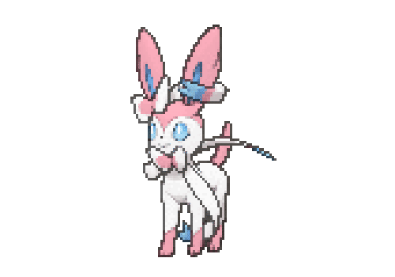

-
Eevee #133

- Normal
Sua capacidade de evoluir em muitas formas permite que ela se adapte suave e perfeitamente a qualquer ambiente.
-
Vaporeon #134

- Água
Vive perto da água. Sua longa cauda é marcada por uma barbatana, que muitas vezes é confundida com a de uma sereia.
-
Jolteon #135

- Elétrico
Ele concentra as fracas cargas elétricas emitidas por suas células e lança raios perversos.
-
Flareon #136

- Fogo
O ar inalado é levado ao seu saco de chamas, aquecido e exalado como fogo que atinge mais de 3.000 graus Fahrenheit.
-
Espeon #196

- Psíquico
A ponta de sua cauda bifurcada treme quando está prevendo o próximo movimento de seu oponente.
-
Umbreon #197

- Sombrio
Quando exposto à aura da lua, os anéis em seu corpo brilham levemente e ele ganha um poder misterioso.
-
Leafon #470

- Planta
Quando você vir Leafeon dormindo em um pedaço de sol, saberá que ele está usando a fotossíntese para produzir ar limpo.
-
Glaceon #471

- Gelo
Ele pode controlar sua temperatura corporal à vontade. Isso permite que ela congele a umidade da atmosfera, criando rajadas de pó de diamante.
-
Sylveon #700
- Fada
Este Pokémon usa seus sensores em forma de fita para enviar uma aura calmante para seus oponentes, apagando sua hostilidade.
-
Blaziken #257

- Fogo
- Lutador
Em batalha, Blaziken lança chamas intensas de seus pulsos e ataca os inimigos corajosamente. Quanto mais forte o inimigo, mais intensamente os pulsos deste Pokémon queimam.